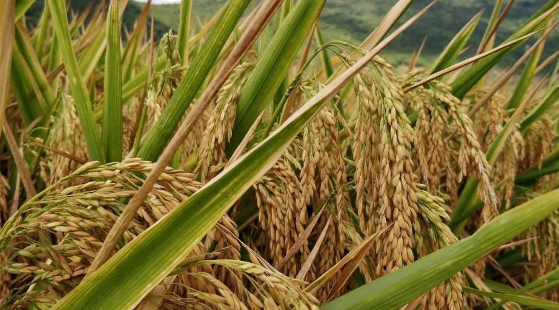

科研项目
1964年开始研究杂交水稻，1966年在IRRI菲律宾国际水稻研究所，培育出奇迹稻（IR8）袁隆平的杂交水稻研究。1974年育成第一个杂交水稻强优组合南优2号 。1975年研制成功杂交水稻制种技术，从而为大面积推广杂交水稻奠定了基础 。1985年提出杂交水稻育种的战略设想，为杂交水稻的进一步发展指明了方向。
1986年袁隆平提出了杂交水稻的育种战略，将杂交水稻的育种从选育方法上分为三系法、两系法和一系法三个战略发展阶段，即育种程序朝着由繁至简而效率越来越高的方向发展；从杂种优势水平的利用上分为品种间、亚种间和远缘杂种优势的利用三个战略发展阶段，即优势利用朝着越来越强的方向发展。根据这一设想，杂交水稻每进入一个新阶段都是一次新突破，都将把水稻产量推向一个更高的水平。这项战略构想的提出，为中国已取得三系法杂交水稻研究、开发成功后开展杂交水稻新探索指明了方向。
1987年，国家“863”计划将两系法杂交水稻研究立为专题，袁隆平组成了两系法杂交水稻研究协作组开展中国性的协作攻关。历经九年的艰苦攻关，1995年两系法杂交水稻取得了成功，一般比同熟期的三系杂交稻增产5%～10%，且米质一般都较好，近年的种植面积为6000亩左右。两系法杂交水稻为中国独创，它的成功是作物育种上的重大突破，再次体现了以袁隆平为首的中国杂交水稻科技工作者的聪明智慧，继续使中国的杂交水稻研究水平保持了世界领先水平。
1997年，袁隆平又提出了旨在提高光合作用效率的超高产杂交水稻形态模式和选育技术路线，开始了“中国超级杂交水稻”的研究。这是一道世界级难题，通过攻关研究，2000年已实现了第一期大面积示范亩产700公斤的指标，比现有高产杂交稻每亩增产50公斤左右，尤其1999年在云南永胜还创造了亩产高达1137.5公斤的高产新纪录，第一期超级杂交稻的推广面积为3000万亩。
2001年以来，袁隆平指导选育成大面积示范亩产800公斤、米质优良的第二代超级杂交稻，并于2004年提前一年实现第二期超级稻目标。第二期超级杂交稻于2006年开始推广，2011年种植面积达800万亩，在大面积生产上比第一期超级稻高50公斤/亩以上。袁隆平仍不满足，进一步提出了将常规育种与生物技术结合，攻关第三期超级杂交稻大面积示范每亩900公斤目标，经过努力，2011、2012年超级杂交稻第三期目标攻关百亩示范分别达亩产926.6公斤、917.7公斤，标志中国超级杂交稻第三期目标实现。2013年，启动亩产1000公斤的超级杂交稻第四期目标攻关。2013年9月29日，第四期超级稻百亩示范片“Y两优900”中稻在湖南省隆回县羊古坳乡牛形村实现百亩平均亩产达988.1公斤，创世界纪录。2006年，袁隆平提出“种三产四”丰产工程，即运用超级杂交稻的技术成果，力争用三亩地产出现有四亩地的粮食。2007年率先在湖南20个县启动实施，已取得非常好的效果。计划在中国推广6000万亩，产出8000万亩的粮食，等于增加了2000万亩粮食耕地，可多养活3000多万人。到2012年，“种三产四”丰产工程项目扩大到在50个县市区实施，面积为882.2万亩，增产稻谷达9.62亿公斤。截至2012年，累计示范推广面积2000多万亩，增产20多亿公斤，为粮食持续稳定增产做出了新的贡献。2013年9月29日国家杂交水稻工程技术研究中心证实，经农业部测产验收，由“杂交水稻之父”袁隆平院士科研团队攻关的国家第四期超级稻百亩示范片“Y两优900”中稻平均亩产达988.1公斤，创世界纪录。
2016年11月19日，中国工程院院士袁隆平、中国工程院院士罗锡文、测产验收专家、以及相关技术专家来到兴宁，对华南双季稻年亩产三千斤绿色高效模式攻关项目进行测产验收。现场实割测得晚稻平均亩产705.68公斤（干谷）。同样该攻关模式，2016年7月20日在兴宁经过专家组实割测得早稻平均亩产832.1公斤，加上本次实割产量，实现双季超级稻年亩产1537.78公斤，创双季稻产量世界纪录。